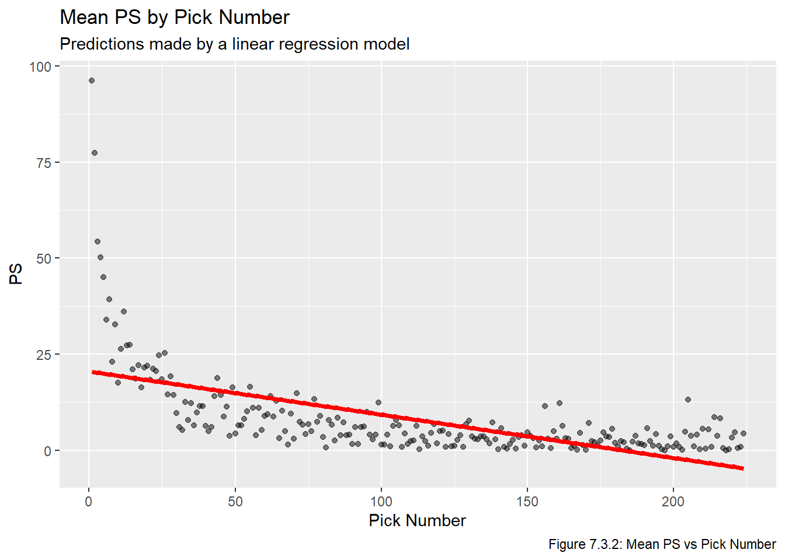
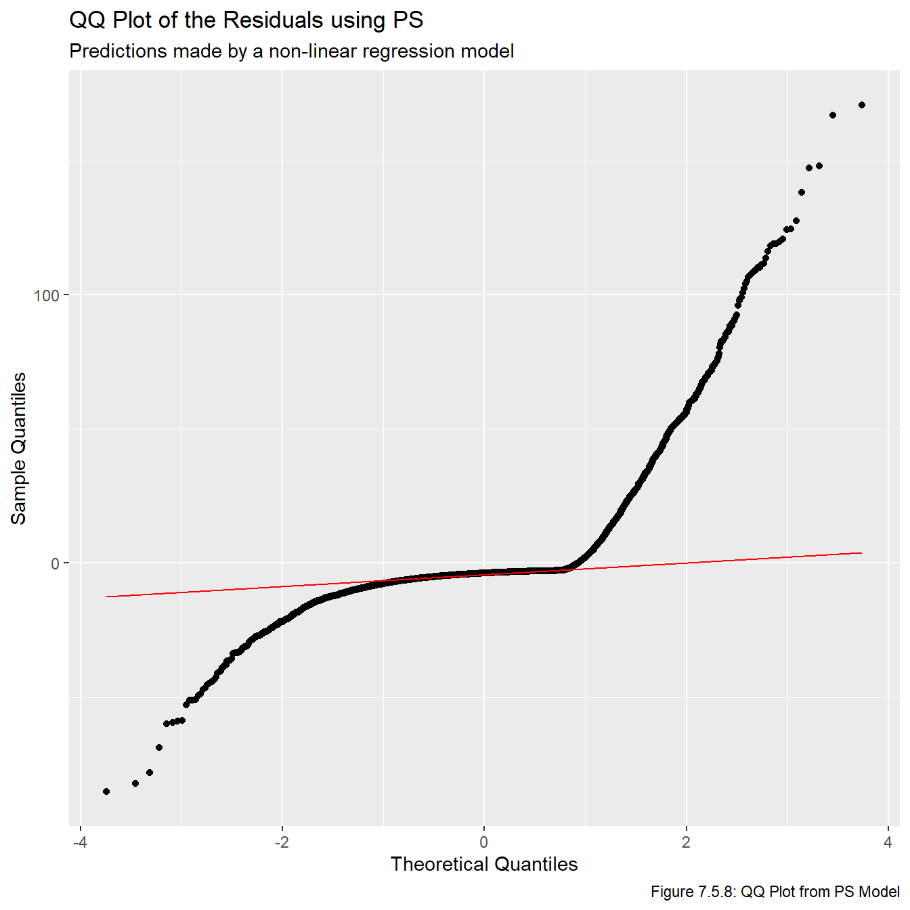

We install and load the necessary packages, along with functions from prior chapters.
Code
# renv::install("patchwork")# renv::install("stringr")# renv::install("reactable")# renv::install("pins")# renv::install("vetiver")# renv::install("plumber")# renv::install("aws.s3")library(patchwork)library(stringr)library(reactable)library(pins)library(vetiver)library(plumber)library(aws.s3)source("functions.R") # load functions defined in prior chapters
7.2 Introduction/Recap
Now that we have metrics representing different ways of calculating the historical value of a draft pick, we can now develop models for predicting the value of future picks. First, we will fit a linear regression model to the data, an then we will develop a model via non-linear regression. We will then put the models on the same scale by multiplying each predicted value by a constant, allowing us to compare models more effectively. Note that the following two Stack Overflow posts were once again very helpful when writing the code in this chapter:
Recall the four plots we ended the Transform chapter with this plot, based on the mean PS, mean GP, success rate, and mean adjusted PS for every selection between 1 and 224. For convenience we replot this data below:
We use lm to fit a linear model to each of the metrics. Note we use a logistic regression model for fitting the model which estimates the probability of a player becoming an NHL regular.
Next we plot the fitted values. The fitted lines are plotted on top of the average values, we use the average values to make the plot easier to read (but the lines were fit using the raw values).
Code
names <-c("PS", "GP", "Adjusted PS", "Probability of Success")for(i in1:length(metrics)){assign(str_glue("plot_{metrics[i]}"), ggplot(all_data_comb, aes_string(x ="overall", y =str_glue("mean_{metrics[i]}"))) +geom_point(alpha =0.5) +labs(title =str_glue("{names[i]} verses Overall"), x ="Overall", y =str_glue("{names[i]}")))}for(i in1:length(metrics)){assign(str_glue("plot_lm_{metrics[i]}"), get(str_glue("plot_{metrics[i]}")) +geom_line(data = lm_pred_vals, aes_string(x ="overall", y = metrics[i]), col ="red", lwd =1.5))}plot_lm_p_reg =ggplot(all_data_comb, aes(x = overall, y = suc_rate)) +geom_point(position ="jitter", alpha =0.5) +geom_line(data = lm_pred_vals, aes(x = overall, y = p_reg), col ="red", lwd =1.5)(plot_lm_ps + plot_lm_gp) / (plot_lm_adj_ps + plot_lm_p_reg)

Based on the plots above, all four of these linear models are inadequate. Moreover, all of the models except for the one based on NHL regular probability fail our second requirement for a feasible model, which is that all picks have a strictly positive value. With this in mind, we move onto fitting a non-linear model.
7.4 Non-Linear Regression
Given that none of the four linear models were appropriate, we will reattempt to fit a model using non-linear regression (ie the nls function, which stands for non-linear least squares). The resource Non-linear Regression in R was very helpful when working on this section. In short, we will be fitting the model
\(v_{i,m}\) is the value of pick \(i\) based on metric \(m\).
\(\phi_{1, m},\phi_{2, m},\phi_{3, m}\) are parameters we are estimating which depend on which metric we are using.
We choose to use nls because it allows us to directly fit a model with non-linear parameters, we do not need to transform the explanatory or response variates so it makes interpretations significantly easier. We fit the models using the same metrics as before except for the model based on whether players become NHL regulars.
We now plot the fitted line. We once again use plot the line on top of the historical averages to make the plot easier to read.
Code
for(i inseq(1,3)){assign(str_glue("plot_nls_{metrics[i]}"), ggplot(all_data_comb, aes_string(x ="overall", y =str_glue("mean_{metrics[i]}"))) +geom_point() +geom_line(data = nls_pred_vals, aes_string(x ="overall", y =str_glue("{metrics[i]}")), col ="red", lwd =1.5))}plot_nls_ps / plot_nls_gp / plot_nls_adj_ps
Now that we have fit the models, we plot the residual vs overall values. Note that typically wed plot the residual vs fitted values, but this plot is impossible to make any inferences from because so many of the fitted values are relatively small, meaning they all get clumped together.
This clearly fails a number of the model assumptionts, most notably the assumption regarding a constant residual variance. This is not really that surprising and is not a major cause for concern as pretty much any feasible model will show the same general pattern for a few reasons. First, there is no upper bound on our residuals since (in theory) players can play in infinitely many games or generate infinite PS. However, there is a lower bound on the residuals because if a player never plays in an NHL game and/or never generates any PS, then the associated residual will be the predicted value. That is, there is a limit to how much a player can underperform relative to draft position (since we dont allow negative PS and negative GP is not possible), but there is no limit to how much they can overperform. One other thing to note is that, generally speaking, there seems to be more variance among earlier picks than later picks because earlier picks can over or underperform a lot, while later picks can overperform a lot or underperform a little (because their expectations are lower, even if they do nothing they didnt underperform that much).
Clearly the residuals are not normally distributed. This is another result of the points mentioned above, that there is a lower bound on a players underperformance, but no upper bound on how much they can overperform.
The lesson to take from these plots is that deriving confidence intervals or calculating p-values is almost certainly a bad idea because the assumptions that those mechanisms rely on are clearly invalid. On the other hand, taking point estimates is probably okay since we effectively found a line of best fit which doesnt rely on any of the model assumptions. With this in mind, we will be relying on the point estimates given by this model for the remainder of this report.
7.5 Model Selection
For convenience we replot the fitted values from the non-linear models we fit in the last section.
Code
plot_nls_ps + plot_nls_gp + plot_nls_adj_ps
One problem with these plots is that theyre all on different scales, which makes comparing models very difficult. Recall from the Introduction chapter that we want to end up with a model which has \(\hat v_1 = 1000\) points to maintain consistency with existing work. To do this, we set \(C_m = \frac{1000}{v_{1,m}}\), and then multiply all of the other \(\hat v_{i,m}\) values by \(C_m\) for \(i \not= 1\), and then use reactable to make sure it worked.
This seems to look good. Now that the predicted values are on the same scale, we can plot them on top of each other.
Code
ggplot(scaled_vals, aes(x = overall)) +geom_line(aes(y = ps), col ="blue", lwd =1.2) +geom_line(aes(y = gp), col ="limegreen", lwd =0.75) +geom_line(aes(y = adj_ps), col ="salmon", lwd =0.8, lty =4)

Interestingly, the PS and Adjusted PS lines are basically directly on top of each other, which implies that the adjustment we made had little impact on the predictions. We can also compare the residual sum of squares without rescaling all the values and refitting the models by simply multiplying the RSS values by the appropriate \(C_m\): Why doesnt this work???
Recall that since the correlation between PS and GP was \(\approx\) 0.85, we will not use a model which incorporates both due to multicollinearity concerns. Given the choice, we prefer to use a metric based on PS rather than GP for a few reasons.
PS credits players for contributing to their team, whereas GP gives credit for being good enough to play for a team.
The RSS associated with the model with GP is significantly higher than the RSS for both of the PS-related models.
While both metrics are right skewed, in this context we prefer a metric which has a longer right tail since this will allow us to distinguish good players from elite players. Specifically, there is a hard cap on how many games a player can play in a certain time frame, but the limit on PS is impossible to reach (a player would have to win every game in his career and be fully responsible for each and every win). In other words, if two players each played in 82 games per season for 10 seasons before retiring, they would both have played in 820 games, but their PS values could be quite different, indicating that PS is a more distinguishing metric. We know PS has a longer tail because the maximum of PS is more standard deviations away from the mean than the maximum of GP, as we showed at the start of our EDA in the Visualize chapter.
The PS formula includes time on ice, which tends to be a better measure of player involvement than GP. For example, Player A who plays 20 minutes a night and and Player B who plays 10 minutes a night may have the same GP, but Player A would likely be considered more valuable because he plays twice as much.
Now that weve settled either using PS or Adjusted PS, we take a closer look at the difference between their predicted values. The mean disparity between the two predicted values is about 1.04, which indicates the metric we choose is unlikely to significantly impact our conclusion since picks are values out of 1000. Note that we need to take the absoute value since the since the scaled version of Adjusted PS may be smaller than the scaled PS values.
Code
mean(abs(scaled_vals$adj_ps - scaled_vals$ps))
[1] 1.044389
We can also plot the percent differences.
Code
ggplot(scaled_vals, aes(x = overall)) +geom_line(aes(y = ps / adj_ps), col ="dodgerblue") +geom_line(aes(y = adj_ps / ps), col ="salmon")
We see that most of the variation between the PS and Adjusted PS values occurs late in the draft, but these picks are very close in raw point values since 3% of a relatively small number is a small number. With this in mind, we choose the model based on PS (not Adjusted PS). As the analysis in this section has showed, there is almost zero difference between the models based on PS and Adjusted PS models. Therefore we prefer to use the simpler model, which in this case is PS. The RSS values for both models are fairly close, and even though the RSS is smaller for Adjusted PS we will chose the PS model due to it being a simpler model.
7.6 Finishing Touches
To make the rest of this report and shiny app simpler, we will refit the model with scaled PS values:
Formula: scal_ps ~ SSlogis(log(overall), phi1, phi2, phi3)
Parameters:
Estimate Std. Error t value Pr(>|t|)
phi1 1695.81037 216.44187 7.835 5.6e-15 ***
phi2 0.44022 0.28595 1.540 0.124
phi3 -1.21381 0.05159 -23.527 < 2e-16 ***
---
Signif. codes: 0 '***' 0.001 '**' 0.01 '*' 0.05 '.' 0.1 ' ' 1
Residual standard error: 188.5 on 5422 degrees of freedom
Number of iterations to convergence: 2
Achieved convergence tolerance: 1.614e-06
We now create two functions which will be used in our R Shiny app. The first is value, which takes in a pick and returns the number of points (a more user-friendly version of predict), and the second is pick, which takes in a number of point and returns the closest pick to that number of points. Recall we fit the model \[ v_{i,m} = \frac{\phi_{1, m}}{1+ (\frac{e^{\phi_{2,m}}}{i})^{1/\phi_{3,m}}} \]and we found \(\phi_{1,m} = 1695.81038, \phi_{2,m} = 0.4402, \phi_{3,m} = -1.21381\). Creating the value function is now straightforward.
Code
phis <-unname(coef(nls_scal_ps))phi_1 <- phis[1]phi_2 <- phis[2]phi_3 <- phis[3]value <-function(overall){ phi_1 / (1+ (exp(phi_2) / overall)^(1/ phi_3))}# check it worked:value(1) # should be 1000
[1] 1000
Code
value(224) # should be approx 27.762
[1] 27.7623
The pick function is more complex, we need to take the inverse of the value function. Its not a difficult computation and its a few steps so we omit the steps, it turns out the inverse is given below:
\[
i = \frac{e^{\phi_{2,m}}}{(\frac{\phi_{1,m}}{v_{i,m}} - 1)^{\phi_{3,m}}}
\]
Code
pick <-function(value){round(exp(phi_2) / ((phi_1 / value -1)^phi_3))}# check it worked:pick(1000) # should be 1
[1] 1
Code
pick(27.76) # should be 224
[1] 224
Code
i <-seq(1, 224)all(pick(value(i)) == i)
[1] TRUE
Note that the value and pick functions we implemented in R are not perfect inverses of each other because of the use of round, but for the purposes of our R Shiny app this will not be an issue. As one final check, we see what the difference in values was for a recent NHL trade in which the Philadelpha Flyers acquired the 12th overall selection from the Pittsburgh Penguins in exchange for the 22nd and 31st selections. We can see that this difference is about 39 points, which is equivalent to Pittsburgh receiving a mid 5th round pick in surplus value. This seems about right, it is widely accepted that the team that acquires the highest pick almost always gives up more than they receive. This is why teams only trade up if they really like a player who is available at the current pick, but that the team thinks will not be available at their next pick.
Code
value(12) -value(22) -value(31)
[1] -38.92649
Code
pick(38.9271)
[1] 147
7.7 Storing the Model
We now store the model so we can access it from within our Shiny app. Note that some of the steps given on DevOps for Data Science were in Python, I found the equivalent R steps here.
Code
# I couldn't find any info online about the error I was getting so I used # ChatGPT, it turns out vetiver does not work with nls objects, so for# now I'm using one of the lms lm_test <-lm(ps ~ overall, data = all_data_adj)Sys.setenv("AWS_ACCESS_KEY_ID"=Sys.getenv("AWS_ACCESS_KEY_ID"),"AWS_SECRET_ACCESS_KEY"=Sys.getenv("AWS_SECRET_ACCESS_KEY"), "AWS_DEFAULT_REGION"="us-east-2")bucket ="trevor-stat468"board <-board_s3(bucket = bucket) s3write_using(as.data.frame(scal_ps), FUN = write_parquet, bucket = bucket, object ="scal_ps.parquet")v <-vetiver_model(lm_test, "lm_test")vetiver_pin_write(board, v)
Creating new version '20250802T201654Z-c4f2b'
Writing to pin 'lm_test'
Create a Model Card for your published model
Model Cards provide a framework for transparent, responsible reporting
Use the vetiver `.Rmd` template as a place to start
We can also interface with the model using vetiver_api. Note I have set eval = FALSE for this chunk because the report wont render otherwise, Ive included a screenshot of the popup instead.
Code
pr() |>vetiver_api(v) |>pr_run(port =8080)
Here is a screenshot of the popup that opens when the above code is run. We now proceed to the Communication chapter, which contains the key results from this report.


{kind=link}